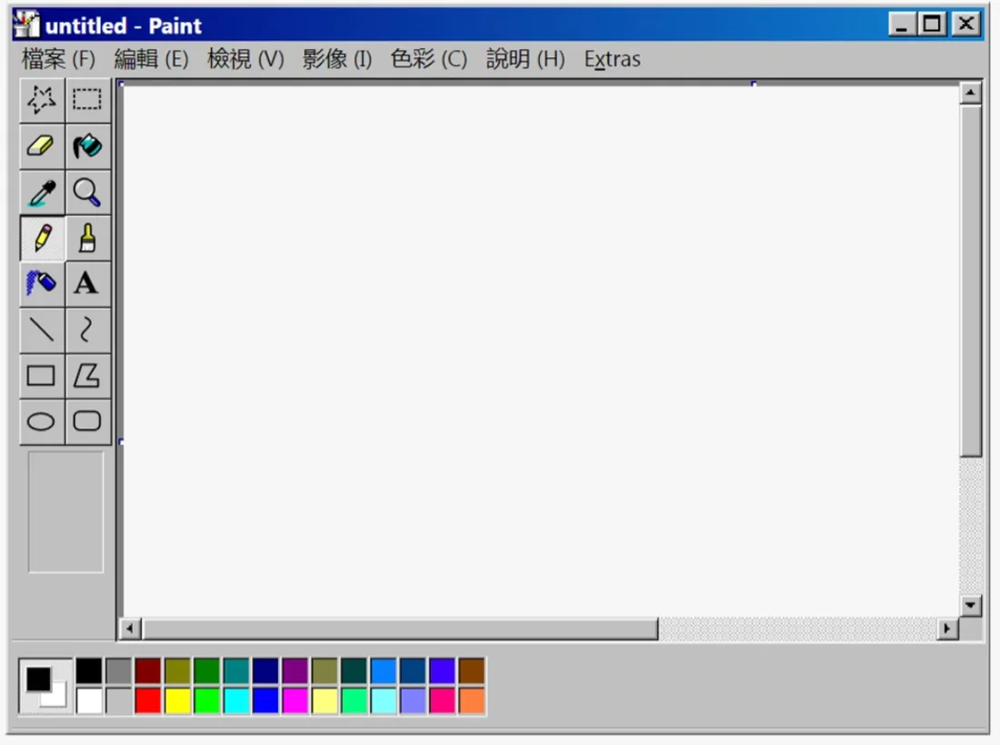

Early Digital Interfaces

Timeline
— Windows 1.0 shipped with Paint, one of the first drawing programs many people ever used.
— Windows XP launched with “Bliss,” the green-hill wallpaper seen on millions of screens.
— Windows Vista's glossy, glass-like Aero look defined an era of shiny, bubbly design.
— iOS 7 replaced realistic, textured icons with flat design.
Early digital interfaces used grey windows, pixel icons, toolbars, and later glossy buttons, glass effects, and sky-blue gradients. That later style is now called Frutiger Aero, named after the typeface often used with it.
These interfaces were designed to look friendly and optimistic about technology. Seen today, a Paint window or the XP wallpaper brings back school computer labs and family desktops. That same mix of familiarity and strangeness drives the liminal spaces aesthetic, and the pixel graphics link back to the Game Boy and Tamagotchi.